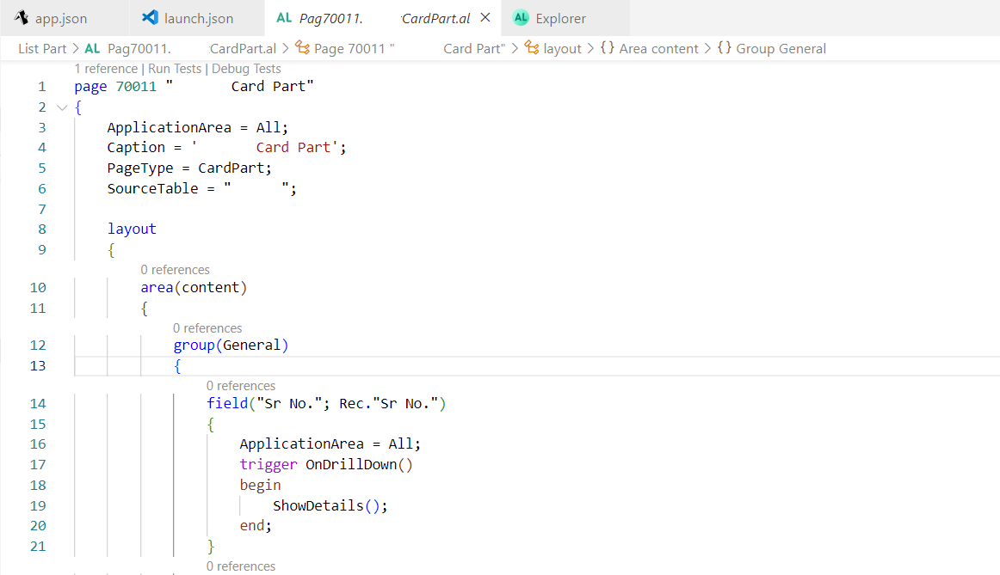
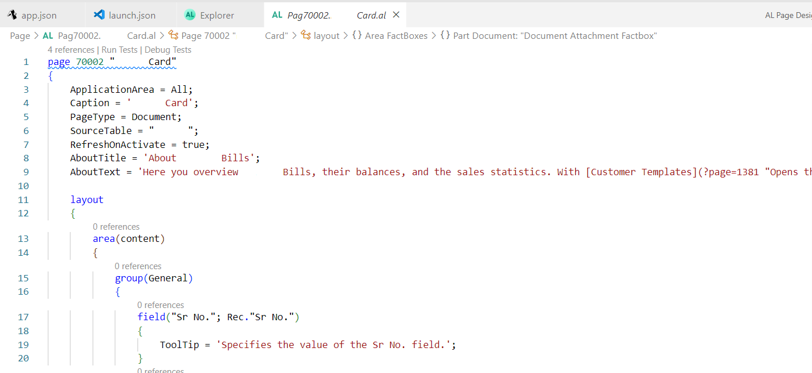
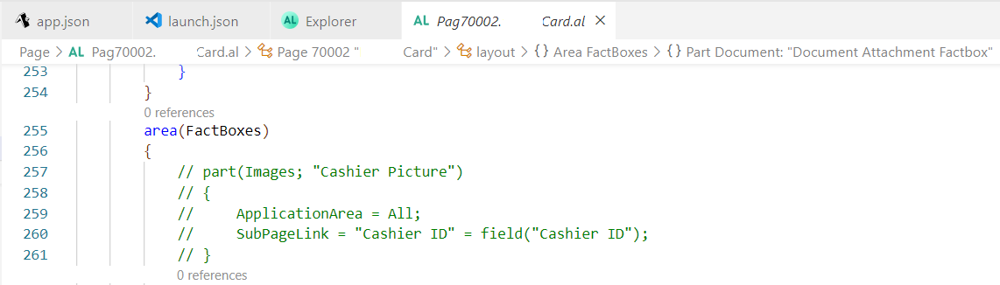
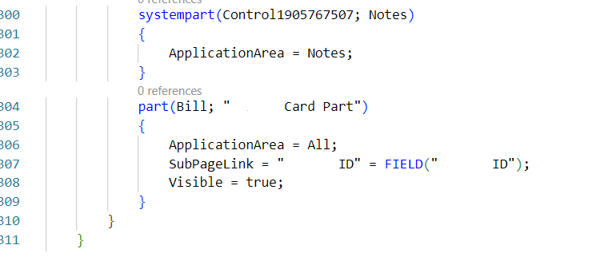
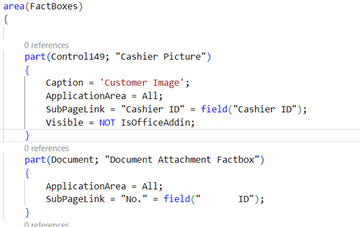
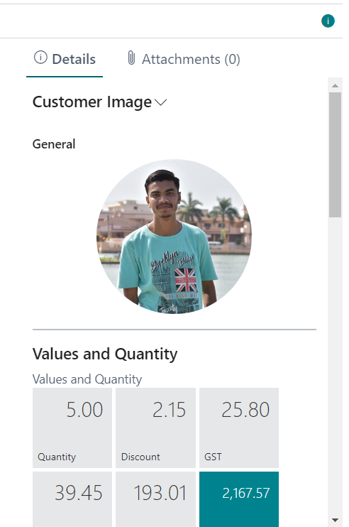
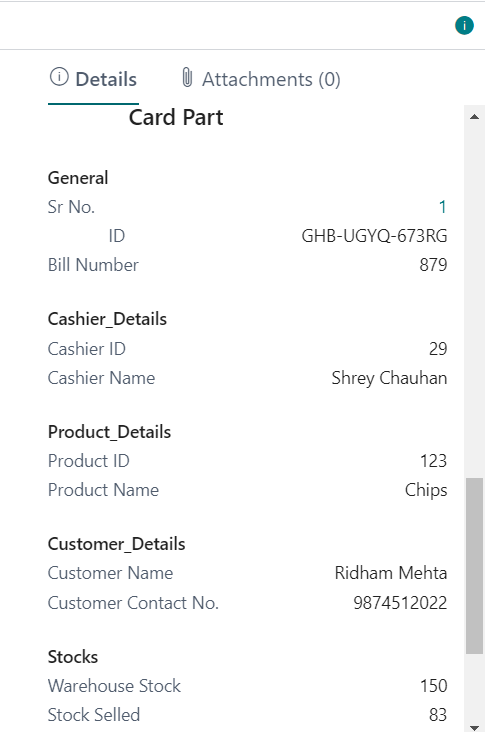

How to Create a FactBox ?
Dynamics 365 Business Central includes a FactBox control element on many key list pages. The purpose of this FactBox is to display informations related to records in the lists, providing extra insight into the data. The idea is that as you move between rows in the list, the record updates for the selected entry.
Factbox area is normally located on the Left side of the page and is used to display content including other pages, charts, and system parts such as Notes, and Links.
Creating a factbox can be done in two steps.
- Creating a factbox Page
- Adding a FactBox area to a page
Creating a factbox Page :-
For creating a factbox first we must have the tables and pages for the related datasets.
After that Create a new Card Part in visual studio code in AL extension. In that select the source table and inserts the fields you want to display on client side.
Create different groups of different fields to simplify the look.
Here how its look

This is of my AL Project 3.
Adding a FactBox area to a page :-
After creating the Card part of factbox you have to add this card part the Header card or List where you want to show the factbox.

In the card page you have to add the area(FactBox) in area(Content)

In that you have give your card part

You can also add and call the standard Microsoft Dynamics 365 Business Central card parts like for Customer Images, Attachments and many more.

Output:-
And here how it’s going to look like

